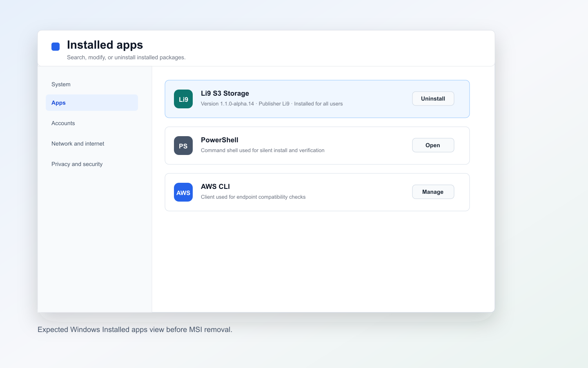

Windows Packages
Windows Packages: Uninstall.
Remove the installation in dependency order and verify that managed resources are gone.
Uninstall Checklist
Stop Li9 S3 processes before removing binaries. Treat data, metadata, KMS, fencing, and audit directories as retained production state unless destructive cleanup is explicitly approved.
Deleting
%ProgramData%\Li9\S3Storage removes local data, metadata, generated fencing token, generated KMS key, and logs.
| Step | Purpose | Expected Result |
|---|---|---|
| Validate health | Confirm the cluster can tolerate removing this Windows node. | Gateway, control API, and storage-node /v1/info endpoints are healthy before process stop. |
| Stop processes | Stop accepting local traffic and remove PID files. | No Li9 S3 process is running from the install directory. |
| Remove package | Uninstall MSI or remove ZIP directory. | No executable path remains under the install directory. |
| Review retained data | Decide whether local data is evidence, backup source, or disposable state. | Data directories are retained or deleted intentionally. |
$InstallDir = "C:\Program Files\Li9\S3Storage"
if (-not (Test-Path $InstallDir)) { $InstallDir = "C:\Li9\S3Storage" }
& "$InstallDir\scripts\Stop-Li9S3Services.ps1"
# MSI uninstall
$Li9NativeVersion = "1.1.0-alpha.14"
$Msi = "C:\Temp\li9-s3-storage-windows-$Li9NativeVersion.msi"
if (Test-Path $Msi) {
msiexec.exe /x $Msi /qn /norestart
}
# ZIP uninstall
if (Test-Path "C:\Li9\S3Storage") {
Remove-Item C:\Li9\S3Storage -Recurse -Force
}
Get-Process | Where-Object { $_.Path -like "*Li9*S3Storage*" }
Get-NetTCPConnection -LocalPort 9000,9001,9002,9003,9004,9005,9006,9007,9008,9009,9010 -ErrorAction SilentlyContinue
# Destructive cleanup only:
# Remove-Item "$env:ProgramData\Li9\S3Storage" -Recurse -Force
Verification
Verify from PowerShell and from an external S3 client. If this is a rolling removal from a Windows cluster, run cluster health checks from a remaining node or admin workstation that still has the tools installed.
Get-Process | Where-Object { $_.Path -like "*Li9*S3Storage*" }
Test-NetConnection 10.20.10.11 -Port 9000
# From a remaining node or admin workstation:
aws --endpoint-url $env:S3_ENDPOINT s3api list-buckets
$Li9Scheme = if ($Li9Scheme) { $Li9Scheme } else { "http" }
$Li9ControlHost = if ($Li9ControlHost) { $Li9ControlHost } else { "10.20.10.11" }
$Li9GatewayHost = if ($Li9GatewayHost) { $Li9GatewayHost } else { "10.20.10.11" }
Invoke-WebRequest "${Li9Scheme}://${Li9GatewayHost}:9000/v1/info" -UseBasicParsing
Invoke-WebRequest "${Li9Scheme}://${Li9ControlHost}:9001/v1/info" -UseBasicParsing